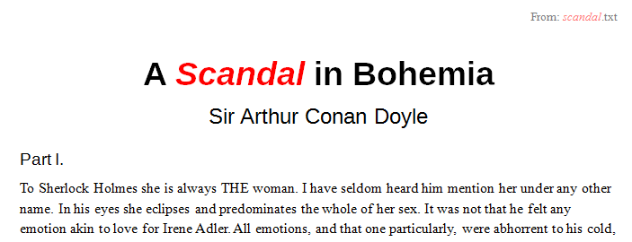

Chapter 9. Text Search and Replace¶
Topics
Finding the First Matching Phrase; Replacing all the Matching Words; Finding all Matching Phrases
Example folders: "Text Tests" and "Utils"
The GenericTextDocument service supports the XSearchable and XReplaceable interfaces (see Chapter 5, Figure 2), which are the entry points for doing regular expression based search and replace inside a document.
XSearchable.createSearchDescriptor() builds a search description (an ordinary string or a regular expression). The search is executed with XSearchable.findAll() or findFirst() and findNext().
XReplaceable works in a similar way but with a replace descriptor which combines a replacement string with the search string. XReplaceable.replaceAll() performs search and replacement, but the XSearchable searching methods are available as well. This is shown in Figure 1.

Figure 1. The XSearchable and XReplaceable Interfaces.
The following code fragment utilizes the XSearchable and XSearchDescriptor interfaces:
XSearchable searchable = Lo.qi(XSearchable.class, doc);
XSearchDescriptor srchDesc = searchable.createSearchDescriptor();
srchDesc.setSearchString("colou?r");
// a regular expression meaning "color" or "colour"
XReplaceable and XReplaceDescriptor objects are configured in a similar way, as shown in the examples.
XSearchDescriptor and XReplaceDescriptor contain get and set methods for their strings. But a lot of the search functionality is expressed as properties in their SearchDescriptor and ReplaceDescriptor services. Figure 2 summarizes these arrangements.

Figure 2. The SearchDescriptor and ReplaceDescriptor Services.
The next code fragment accesses the SearchDescriptor properties, and switches on regular expression searching:
XPropertySet srchProps = Lo.qi(XPropertySet.class, srchDesc);
srchProps.setPropertyValue("SearchRegularExpression", true);
Alternatively, Props.setProperty() can be employed:
Props.setProperty(srchDesc, "SearchRegularExpression", true);
Once a search descriptor has been created (i.e. its string is set and any properties configured), then one of the findXXX() methods in XSearchable can be called.
For instance, XSearchable.findFirst() returns the text range of the first matching element (or null), as in:
XInterface srch = (XInterface) searchable.findFirst(srchDesc);
XTextRange matchTR = Lo.qi(XTextRange.class, srch);
The example programs, TextReplace.java and ItalicsStyler.java, demonstrate search and replacement. TextReplace.java uses XSearchable to find the first occurrence of a regular expression and XReplaceable to replace multiple occurrences of other words.
ItalicsStyler.java calls XSearchable's findAll() to find every occurrence of a phrase.
1. Finding the First Matching Phrase¶
TextReplace.java repeatedly calls XSearchable.findFirst() with regular expressions taken from an array. The first matching phrase for each expression is reported. For instance, the call:
String words[] = {"(G|g)rit", "colou?r"};
findWords(doc, words);
prints the following when "story.doc" is searched:
Searching for first occurrence of "(G|g)rit"
- found "Grit"
- on page 1
- at char position: 929
Searching for first occurrence of "colou?r"
- found "colour"
- on page 5
- at char position: 10856
Three pieces of information are printed for each match: the text that matched, its page location, and its character position calculated from the start of the document. The character position could be obtained from a text cursor or a text view cursor, but I need a page cursor to access the page number. Therefore the easiest thing to use a text view cursor, and a linked page cursor.
The code for findWords():
private static void findWords(XTextDocument doc, String[] words)
{
// get the text view cursor and linked page cursor
XTextViewCursor tvc = Write.getViewCursor(doc);
tvc.gotoStart(false);
XPageCursor pageCursor = Lo.qi(XPageCursor.class, tvc);
try {
XSearchable searchable = Lo.qi(XSearchable.class, doc);
XSearchDescriptor srchDesc =
searchable.createSearchDescriptor();
for(int i = 0; i < words.length; i++ ) {
System.out.println("Searching for first occurrence of \"" +
words[i] + "\"");
srchDesc.setSearchString(words[i]);
Props.setProperty(srchDesc, "SearchRegularExpression", true);
XInterface srch = (XInterface) searchable.findFirst(srchDesc);
if (srch != null) {
XTextRange matchTR = Lo.qi(XTextRange.class, srch);
tvc.gotoRange(matchTR, false);
System.out.println(" - found \"" +
matchTR.getString() + "\"");
System.out.println(" - on page " +
pageCursor.getPage());
tvc.gotoStart(true);
System.out.println(" - at char position: " +
tvc.getString().length());
}
else
System.out.println(" - not found");
}
}
catch(com.sun.star.uno.Exception e) {
System.out.println(e);
}
} // end of findWords()
findWords() creates the text view cursor (tvc), moves it to the start of the document, and links the page cursor to it:
XPageCursor pageCursor = Lo.qi(XPageCursor.class, tvc);
There is only one view cursor in an application, so when the text view cursor moves, so does the page cursor, and vice versa.
The XSearchable and XSearchDescriptor interfaces are instantiated, and a for-loop searches for each word in the supplied array. If XSearchable.findFirst() returns a matching text range, it's used by XTextCursor.gotoRange() to update the position of the cursor.
After the page position has been printed, the cursor is moved to the start of the document with selection turned on:
tvc.gotoStart(true);
System.out.println(" - at char position: " +
tvc.getString().length());
This means that tvc.getString() will return all the text from the start of the document to the current matching point, and so length() will return the character position measured from the beginning of the file. As I've mentioned previously, this approach may fail if the size of the string being instantiated is too big.
2. Replacing all the Matching Words¶
TextReplace.java also contains a method called replaceWords(), which takes two string arrays as arguments:
// code fragment inside TextReplace.java
String ukWords[] = {
"colour", "neighbour", "centre", "behaviour", "metre", "through" };
String usWords[] = {
"color", "neighbor", "center", "behavior", "meter", "thru" };
replaceWords(doc, ukWords, usWords);
replaceWords() cycles through the arrays, replacing all occurrences of the words in the first array (e.g. in ukWords[]) with the corresponding words in the second array (e.g. in usWords[]). For instance, every occurrence of "colour" is replaced by "color".
The output:
Change all occurrences of ...
colour -> color
- no. of changes: 1
neighbour -> neighbor
- no. of changes: 2
centre -> center
- no. of changes: 2
behaviour -> behavior
- no. of changes: 0
metre -> meter
- no. of changes: 0
through -> thru
- no. of changes: 4
Since replaceWords() doesn't report page and character positions, its code is somewhat shorter than findWords():
private static void replaceWords(XTextDocument doc,
String[] oldWords, String[] newWords)
{
XReplaceable replaceable = Lo.qi(XReplaceable.class, doc);
XReplaceDescriptor replaceDesc =
replaceable.createReplaceDescriptor();
System.out.println("Change all occurrences of ...");
for (int i = 0; i < oldWords.length; i++) {
System.out.println(" " + oldWords[i] + " -> " + newWords[i]);
replaceDesc.setSearchString(oldWords[i]);
replaceDesc.setReplaceString(newWords[i]);
int numChanges = replaceable.replaceAll(replaceDesc);
// replace all occurrence of word
System.out.println(" - no. of changes: " + numChanges);
}
} // end of replaceWords()
The XReplaceable and XReplaceDescriptor interfaces are created in a similar way to their search versions. The replace descriptor has two set methods, one for the search string, the other for the replacement string.
3. Finding all Matching Phrases¶
ItalicsStyler.java is supplied with a filename and a string on the command line. For instance:
> run ItalicsStyler story.doc scandal
The program opens the file and uses the "search all' method in XSearchable to find all occurrences of the string in the document. The matching strings are italicized and colored red, and the changed document saved as "italicized.doc". These changes are not performed using XReplaceable methods.
Figure 3 shows a fragment of the resulting document, with the "scandal" text in the title and header changed. The search ignores case, so the word in the title ("Scandal") was correctly modified.

Figure 3. A Fragment of The Italicized Document.
The ItalicsStyler program also outputs matching details:
Searching for all occurrence of "scandal"
No. of matches: 5
- found "scandal"
- on page 1
- starting at char position: 6
- found "Scandal"
- on page 1
- starting at char position: 2
- found "scandal"
- on page 6
- starting at char position: 13153
- found "scandal"
- on page 18
- starting at char position: 38736
- found "scandal"
- on page 21
- starting at char position: 46425
As with TextReplace.java, the printed details include the page and character positions of the matches.
The searching in ItalicsStyler.java is performed by italicizeAll(), which bears a close resemblance to findWords():
private static void italicizeAll(XTextDocument doc, String phrase)
{
// get the text view cursor and linked page cursor
XTextViewCursor tvc = Write.getViewCursor(doc);
tvc.gotoStart(false);
XPageCursor pageCursor = Lo.qi(XPageCursor.class, tvc);
try {
XSearchable xSearchable = Lo.qi(XSearchable.class, doc);
XSearchDescriptor srchDesc =
xSearchable.createSearchDescriptor();
System.out.println("Searching for all
occurrences of \"" + phrase + "\"");
int phraseLen = phrase.length();
srchDesc.setSearchString(phrase);
Props.setProperty(srchDesc, "SearchCaseSensitive", false);
XIndexAccess matches = xSearchable.findAll(srchDesc);
System.out.println("No. of matches: " + matches.getCount());
for (int i = 0; i < matches.getCount(); i++) {
XTextRange matchTR = Lo.qi(XTextRange.class,
matches.getByIndex(i));
if (matchTR != null) {
tvc.gotoRange(matchTR, false);
System.out.println(" - found \"" +
matchTR.getString() + "\"");
System.out.println(" - on page " +
pageCursor.getPage());
tvc.gotoStart(true);
System.out.println(" - starting at char position: " +
(tvc.getString().length() - phraseLen));
Props.setProperties(matchTR,
new String[] {"CharColor", "CharPosture"},
new Object[] { 0xFF0000,
com.sun.star.awt.FontSlant.ITALIC} );
}
}
}
catch(com.sun.star.uno.Exception e) {
System.out.println(e);
}
} // end of italicizeAll()
After the search descriptor string has been defined, the "SearchCaseSensitive" property in SearchDescriptor is set to false:
srchDesc.setSearchString(phrase);
Props.setProperty(srchDesc, "SearchCaseSensitive", false);
This allows the search to match text contains both upper and lower case letters, such as "Scandal". Many other search variants, such as restricting the search to complete words, and the use of search similarity parameters are described in the SearchDescriptor documentation (loDoc SearchDescriptor service).
XSearchable.findAll() returns an XIndexAccess collection, which is examined element-by-element inside a for-loop. The text range for each element is obtained by applying Lo.qi():
XTextRange matchTR = Lo.qiXTextRange.class, matches.getByIndex(i));
The reporting of the matching page and character position use text view and page cursors in the same way as findWords() in TextReplace.java.
XTextRange is part of the TextRange service, which inherits ParagraphProperties and CharacterProperties. These properties are changed to adjust the character color and style of the selected range:
Props.setProperties(matchTR,
new String[] {"CharColor", "CharPosture"},
new Object[] { 0xFF0000, com.sun.star.awt.FontSlant.ITALIC} );
This changes the "CharColor" and "CharPosture" properties to red and italic.